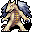
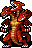

ドラゴン殺し Wyrmbane
英語版 CrawlWiki の記事「Wyrmbane」(0.34 向け、2026-04-08 版)の翻訳です。原文の著者は編集履歴をご覧ください。
| 強力なドラゴンに致命打を与えるたびに力を増していく魔力を持ったランスだ。強力な力を帯びるほど、この槍にふさわしい相手を見つけることが難しくなっていく。 |
 +8 ランス『ドラゴン殺し』
+8 ランス『ドラゴン殺し』
+8 ランス(スピアの改造版: 基本ダメージ8)
竜殺しのブランド
AC +3
rF+
rC+
rPois
ドラゴンを倒すのに使うと強化値が上がる
強化値のしくみ
竜殺しの効く相手をドラゴン殺しで倒すか、ドラゴン殺しで攻撃したあとの補助攻撃で倒すと、強化値が +1 される。ただし、倒したドラゴンの HD までしか上がらない。
例:
- 最初の +8 のドラゴン殺しでファイアドラゴン(HD 12)を倒すと、+9 になる。
- そのあとドラゴン殺しで沼ドラゴン(HD 9)を倒しても、強化値は変わらない(ドラゴンが弱すぎて強化値を上げられない)。
この方法でドラゴン殺しの強化値が上がるのは +18 までだ。HD がそれより高い竜のモンスターもいるが、上限は変わらない。
次のモンスターは、ドラゴン殺しの強化値が自分の HD より低ければ、倒したときに強化値を上げてくれる。ここに無い竜殺しの効くモンスター(スチームドラゴン、霜ドレイクなど)は弱すぎて、ドラゴン殺しの最初の強化値すら上げられない。
| 記号 | タイル | 名前 | HD |
|---|---|---|---|
| k | |
リンドヴルム | 9 |
| k | |
デスドレイク | 9 |
| D | |
沼ドラゴン | 9 |
| D | |
ファイアドラゴン | 12 |
| D | |
アイスドラゴン | 12 |
| d | |
成体のドラコニアンすべて | 14 |
| D | |
ストームドラゴン | 14 |
| d | |
職業つきのドラコニアンすべて | 16 |
| D | |
水銀ドラゴン | 16 |
| D | |
シャドウドラゴン | 17 |
| k | |
竜穴 | 18 |
| D | |
鉄ドラゴン | 18 |
| D |  |
パールドラゴン | 18 |
| D | |
ゴールドドラゴン | 18 |
| D | |
ザッハ | 19 |
| D | |
骸骨ドラゴン | 20 |
| D |  |
地獄のサーペント | 20 |
| d | |
白娘子 | 20 |
| d | |
ティアマト | 22 |

.png){kind=link}
評価
とても高い。力を存分に蓄えたドラゴン殺し[1]は最上級の武器で、ゲームでいちばんの武器だという声もある。まず、ドラゴン殺しのダメージは高く、しかも耐性で防がれない。最小ディレイに届くのに必要なスキルも少なく、(どの種族でも)盾と一緒に使え、とても役立つ耐性もついてくる。
ただ、この武器が強いのは竜殺しのブランドのおかげではほとんどない。+18 前後のランスをディレイ0.5で振り回せば、どんな相手にも十分通用する。ほかの殺戮のボーナスや腕力強化/バーサークともよく重なる。
+9 のブランドつきの悪魔の三叉戟やパルチザンなら、腕力やスキルが十分あればもっと多くのダメージを出せるし、ドラゴンを倒す必要もない。それでも、ドラゴン殺しは最小ディレイに届くのに必要なスキルが少なく、耐性もつき、ダメージを耐性で防がれない。長柄武器を12より上まで鍛える価値はあるかもしれないが、どうしても必要というわけではない。
ドラゴンの見つけ方
ドラゴン殺しを使いこなすには、まずこれでたくさんのドラゴンを倒さなければならない。ありがたいことに、これは思ったより楽だ。+12 までなら、深層のあちこちでわりと簡単に見つかるファイアドラゴンやアイスドラゴンを狩れば上げられる。ストームドラゴン、シャドウドラゴン、水銀ドラゴン(HD 14〜17)は宝物庫:5 によくいる。職業つきのドラコニアン(HD 16)はゾットの領域とその入り口のあたりにいる。
+18 まで一気に上げられるドラゴンで、いちばん見つけやすいのはたぶん竜穴、ゴールドドラゴン、骸骨ドラゴンだ。竜穴は深層に、ゴールドドラゴンはゾットの領域にいて、骸骨ドラゴンやドラゴンの派生アンデッドは地下墓地で見つかる。アビス、地獄、パンデモニウムには、とりわけ命知らずの探検家が狩れるドラゴンがもっといる。
ユニークのマギーとマージェリーは、どちらもごくわずかな確率(1%)で、少しだけ強化の進んだドラゴン殺しを持って現れる。マギーのものは +9、マージェリーのものは +10 まで上がっている。
変更履歴
- 0.25 で、マギーとマージェリーが強化の進んだドラゴン殺しを持って現れることがあるようになった。
- 0.19 より前は、ドラゴン殺しには rC+ の代わりに +Rage がつき、AC ボーナスは +5 だった。
- 0.15 より前は、ドラゴン殺しの強化値は +9,+6 で、ドラゴンを倒すとどちらかが上がった。
出典
- ↑ art-data.txt:682 (0.34.1)